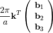

opfm.qe.io package¶
Submodules¶
opfm.qe.io.qexml module¶
-
class
opfm.qe.io.qexml.PWscfDataIO(data_file_xml, auto_read=True, units={})¶ Bases:
ElementTree-
get_ecutwfc(units='Ry')¶
-
read_atomic_positions(units='crystal')¶
-
read_crystal_basis(units='crystal')¶
-
read_dlv()¶
-
read_eigenvalues(units='eV')¶
-
read_kpoints(units='crystal')¶
-
-
opfm.qe.io.qexml.read_atomic_positions(data_file_xml, units='cartesian')¶
-
opfm.qe.io.qexml.read_crystal_basis(data_file_xml, units='crystal')¶
-
opfm.qe.io.qexml.read_dlv(data_file_xml, units='bohr')¶
-
opfm.qe.io.qexml.read_eigenvalues(data_file_path, units='Ha')¶
-
opfm.qe.io.qexml.read_fermi_energy(data_file_path, units='Ha')¶
-
opfm.qe.io.qexml.read_fft_grid_dims(data_file_path)¶
-
opfm.qe.io.qexml.read_kpoints(data_file_path, units='crystal')¶ Read k-points from data-file.xml
Parameters: data_file_path: str
path of data-file.xml
Returns: kpoints: ndarray
Notes
The k-points in data-file.xml are given in Cartesian coordinates in units of
 .
To convert to Cartesian requires multiplication by a factor of . This is
done for units=’cartesian’. To convert to crystal coordinates:
.
To convert to Cartesian requires multiplication by a factor of . This is
done for units=’cartesian’. To convert to crystal coordinates:
The array of reciprocal lattice vectors is exactly that which is returned by
read_rlv
-
opfm.qe.io.qexml.read_lattice_parameter(data_file_path, units='Bohr')¶
-
opfm.qe.io.qexml.read_rlv(data_file_path)¶
-
opfm.qe.io.qexml.read_symmetries(data_file_xml)¶
-
opfm.qe.io.qexml.read_tetrahedra(data_file_path)¶ Read the tetrahedra from data-file.xml
Parameters: data_file_path: str
Path of data-file.xml
Returns: tetrahedra: ndarray